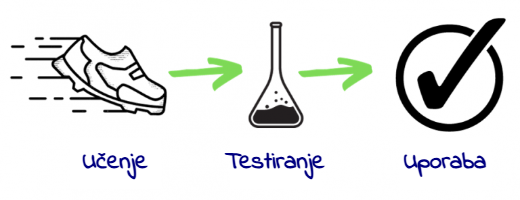
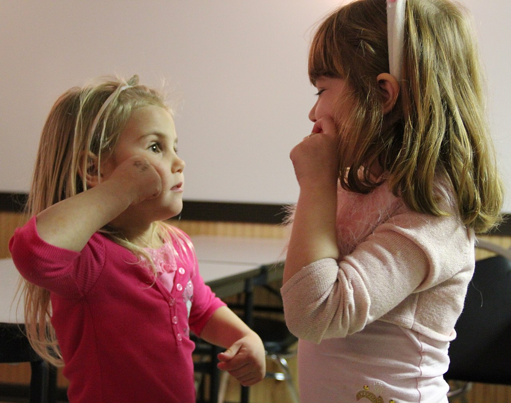

Licenca
To delo je na voljo pod pogoji slovenske licence Creative Commons 2.5:
priznanje avtorstva - nekomercialno - deljenje pod enakimi pogoji.
Celotna licenca je na voljo na spletu na naslovu http://creativecommons.org/licenses/by-nc-sa/2.5/si/. V skladu s to licenco je dovoljeno vsakemu uporabniku delo razmnoževati, distribuirati, javno priobčevati, dajati v najem in tudi predelovati, vendar samo v nekomercialne namene in ob pogoju, da navede avtorja oziroma avtorje in izdajatelja tega dela. Če uporabnik delo predela, kar pomeni, da ga spremeni, preoblikuje, prevede ali uporabi to delo v svojem delu, lahko predelavo dela ponudi na voljo le pod pogoji, ki so enaki pogojem iz te licence oziroma pod enako licenco.

Osnove globokega učenja
Naloga vsake plasti je, da dodeli raven pomembnosti – utež, ki jo dodeli vsakemu prejetemu parametru. Uteži so kot stikala, ki na koncu opredelijo razmerje med predvidenim izhodom in vhodom v določeni plasti. V povprečnem sistemu globokega učenja je takšnih »stikal« na stotine milijonov, kot je tudi na stotine milijonov učnih primerov. Ker ne določamo, niti ne moremo videti izhodnih vrednosti in uteži v plasteh med vhodno in izhodno vrednostjo, se takšne plasti imenujejo skrite plasti.
Ključno vprašanje: Pri katerem parametru $θ$ je napovedani $y$ enak $f(x, θ)$?
Pri prejšnjem primeru prepoznavanja predmeta je naloga prvega »delavca« v globoki nevronski mreži, da zazna robove in jih preda drugemu delavcu, ki bo zaznal obrobe, in tako naprej.
V fazi učenja se napovedana izhodna vrednost primerja z dejansko izhodno vrednostjo. Če med njima obstaja velika razlika, je treba toliko bolj spremeniti uteži, dodeljene v vsaki plasti. Če je razlika majhna, je potrebno le malo prilagoditi vrednosti uteži. Ta proces poteka v dveh delih. Najprej se izračuna razlika med napovedjo in rezultatom (izhodom), nato pa drug algoritem izračuna, kako prilagoditi uteži v vsaki plasti, začenši z izhodno plastjo (v tem primeru informacije tečejo nazaj iz globljih plasti). Tako je na koncu procesa učenja mreža z vsemi svojimi utežmi in funkcijami pripravljena za obdelavo testnih podatkov. Preostali del procesa je enak kot pri klasičnem strojnem učenju.

Obdelava naravnega jezika
Obdelava naravnega jezika (ang. Natural language processing – NLP) je tema številnih raziskav že zadnjih 50 let. Nekatera izmed raziskovalnih prizadevanj na tem področju so privedla do razvoja orodij, ki jih uporabljamo vsak dan:
- urejevalniki besedil,
- samodejni predlogi za slovnične in pravopisne popravke,
- samodejno zapolnjevanje podatkov,
- optično prepoznavanje znakov (OCR).
V zadnjem času imajo na vseh področjih življenja velik vpliv predvsem klepetalni roboti, pametni/hišni/osebni asistenti in prevajalniki.

Dolgo časa je raziskave in industrijo na tem področju upočasnjevala notranja zapletenost jezika. Ob koncu 20. stoletja so slovnice (rezultat dela področnih strokovnjakov) različnih jezikov vsebovale tudi do 50.000 pravil. Takšni ekspertni sistemi so nakazovali možnost izboljšav s pomočjo tehnologije, vendar so bile zanesljive oziroma univerzalne rešitve prezapletene za razvoj.
Po drugi strani je tehnologija prepoznavanja govora zahtevala obdelavo akustičnih podatkov in njihovo pretvorbo v besedilo. Ob vsej raznolikosti govorcev je bil to zares trd oreh.
Raziskovalci so dojeli, da bo to lažje izvedljivo s pomočjo modela jezika. Če model pozna besedišče izbranega jezika in pravila za tvorjenje stavkov, bo iz serije predlogov lažje izbral tisti pravi stavek, ki bo ustrezal zapisanemu/izrečenemu, oziroma, lažje bo izbral prevodno ustreznico izmed niza možnih zaporedij besed.